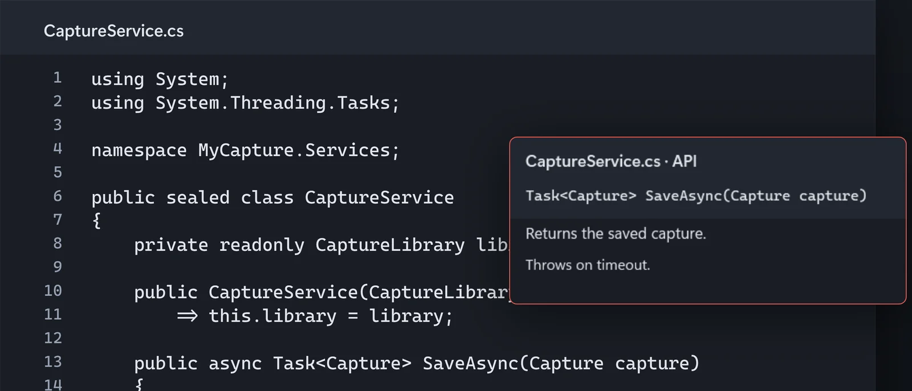
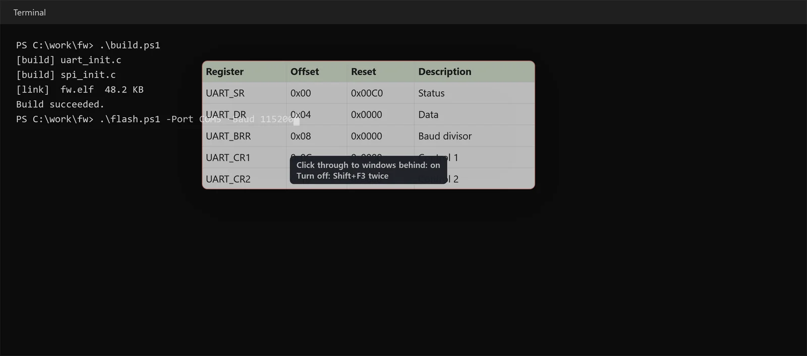
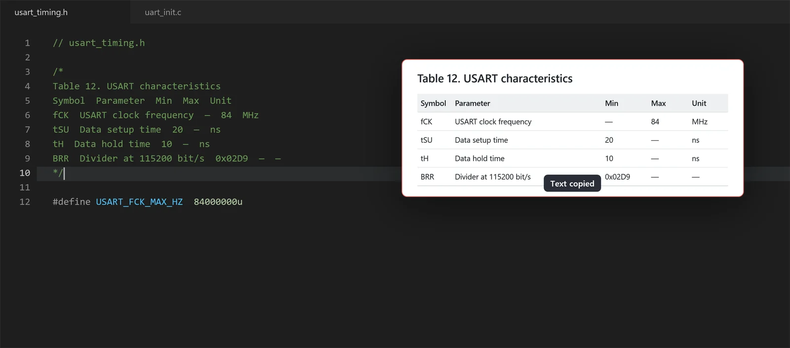
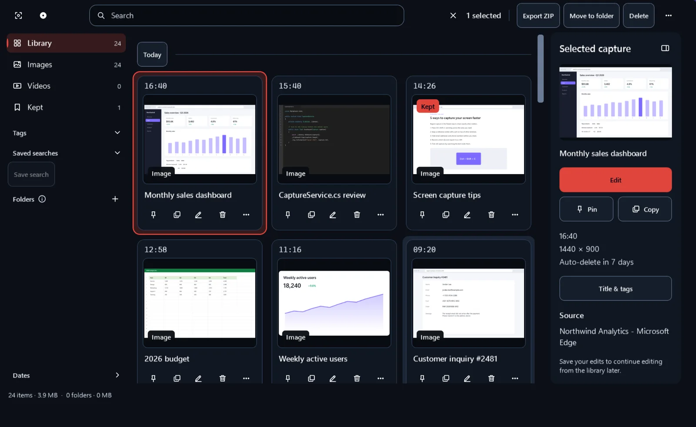
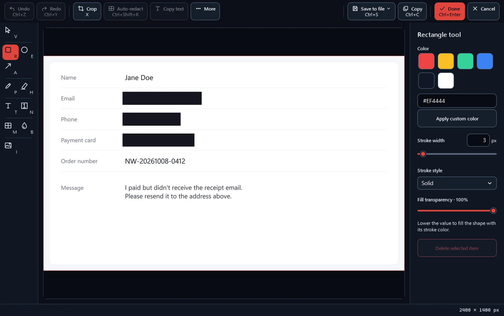

Pin your Excel spec table and go-to code snippets above the editor
Press Ctrl+C in Excel or your editor, then F3, and what you copied becomes a pin. Code while you look, then press Ctrl+C on the pin to copy its cells or code as the original text. Screen captures from Ctrl+Shift+C pin with F3 too.
Free · Windows 11, Windows 10 22H2 (x64)
Pins that keep Excel tables and code as text
Copy a range in Excel and pin it: the pin shows the picture Excel puts on the clipboard, so fonts, fills and borders look the way they do in the sheet, and the cell values stay attached as tab-separated text. Code copied from an editor that includes colors becomes a code pin with the editor's colors and indentation.
Press F3 after copying and the pin appears while your cursor stays in the editor. Ctrl+C or Ctrl+double-click on a pin copies its original text, so a go-to #if or #define block goes straight into the editor.

Pins that stay out of your way
Ctrl+wheel over a pin sets its opacity from 20 to 100%. Turn on Click through to windows behind in its right-click menu and you can click and type in the editor or terminal underneath.
Shift+F3 hides or shows all pins, and pins that are open when you quit come back at the next launch. Up to 20 recently closed pins reopen with their position, zoom and opacity. Pins stay out of the taskbar and the Alt+Tab list.

Text out of images, too
Ctrl+double-click an image pin, such as a datasheet or a web page you captured, to copy its Korean or English text, recognized on this PC. A Ctrl+Shift+C capture goes to the clipboard, so F3 right after it pins the capture.
Tables in images can be copied as CSV, Markdown or tab-separated text.

A library you search by window title and text
Each capture keeps the title of the window it came from, and the text in the image is recognized on this PC. Type a phrase from an error message like timeout or a file name like CaptureService.cs to find the capture.
Screen recordings land in the same library by date and play in place, without a separate player.

Markup and redaction before you share
For a screenshot that goes into an issue, add arrows, text and step numbers in the editor, and blur or pixelate parts of it. Press Ctrl+Shift+R and Auto-redact covers email addresses, card numbers, IP addresses, Korean phone and resident registration numbers, and secrets such as GitHub tokens, AWS access keys and API keys that start with sk-.
You can move, delete or undo each cover and mark before you save.

Coming from Snipping Tool
What you did in Snipping Tool works the same way here. On top of that, you get pins to keep in view while you code.
Stays the same
- Region, window and full-screen capture
- Copied to the clipboard as soon as you capture
- Copy text from images
- Region recording
What you gain
- Excel ranges pinned as they look
- Table and code pins that copy their original text
- Translucent, click-through pins
- Reopen closed pins
- Scrolling capture
- A library you search by window title and text in the image
The default region capture shortcut is Ctrl+Shift+C. To capture with Print Screen, assign it in Settings. If Windows has Print Screen set to open Snipping Tool, Settings explains how to turn that off and links to the Windows setting.
Frequently asked questions
Nothing happens when I press F3.
If another app already uses F3, MyCapture tells you at startup. Assign another key to Pin clipboard to screen in Settings > Shortcuts, or choose Pin clipboard from the tray icon menu. Settings from earlier versions keep their saved keys, so if the shortcut is empty there, assign F3 to it.
Why is it free?
MyCapture is open source under the MIT License. The app talks to no server of ours, so more users do not mean higher running costs. There are no paid features, subscriptions or ads. The source code is on GitHub.
Does anything I capture leave my PC?
Not unless you send it. Capture, editing, recording and text recognition run on this PC, and the app has no usage analytics or crash reporting. It connects to the internet to download a missing text recognition model, and when you run a feature that needs a connection, such as GitHub image attachment. The full list is in the privacy policy.
Does it run on Windows 10?
Yes, Windows 10 version 22H2 (x64) is supported since 4.3.0. While recording, a yellow border may appear around the screen; it is not included in the recording. Windows 10 21H2 and earlier, and Windows 10 on ARM64 PCs, are not supported. The support page lists the differences from Windows 11.
Why is there no sound in recordings?
Recording is meant for short clips that show a bug or a few steps on screen, often shared as GIFs, so MyCapture does not record the microphone or system audio. Use another recorder when you need sound.
How do I get help?
There are three ways.
- GitHub: open an issue in the support repository with your Windows version, MyCapture version and steps to reproduce.
- Microsoft Store: leave a review on the MyCapture page. No GitHub account needed.
- In the app: from 4.4.0, the Contact support window fills in diagnostic details such as the app and Windows versions, so you only write the message and send it as a GitHub issue or a Store review.
Report security issues privately through a security advisory.